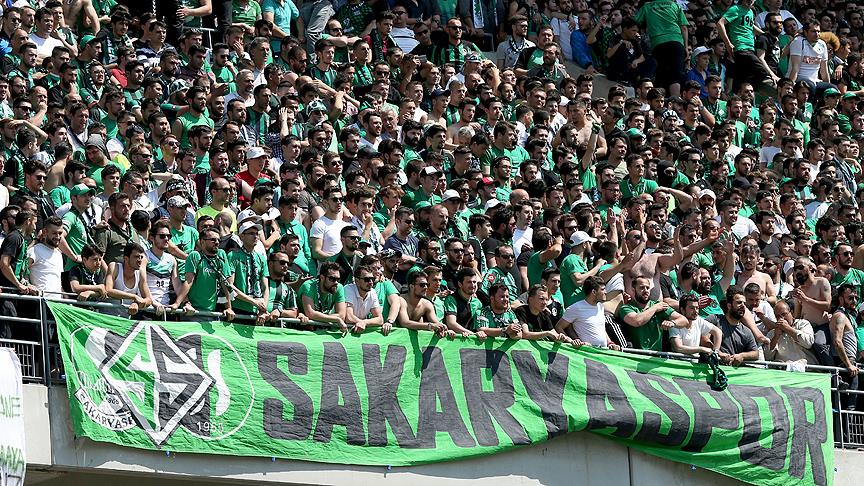

Sakaryaspor, Sakarya’nın en önemli spor kulübüdür ve şehrin kültürel kimliğinin önemli bir parçasıdır. 1965 yılında kurulan kulüp, özellikle altyapıdan yetiştirdiği futbolcular ile tanınmaktadır. Türk futboluna birçok önemli oyuncu kazandırmış ve taraftar desteğiyle her zaman güçlü bir kimlik oluşturmuştur.
Sakaryaspor

🏟 Kulüp Bilgileri
- Kuruluş: 1965
- Şehir: Sakarya
- Renkler: Yeşil - Siyah
- Stadyum: Sakarya Atatürk
📜 Tarihçe
Sakaryaspor Türk futbolunda altyapı başarısıyla bilinir. Birçok yetenekli futbolcu yetiştirmiştir.
🔥 Taraftar Kültürü
“Tatangalar” Türkiye’nin en tutkulu taraftar gruplarından biridir. Maç atmosferi oldukça güçlüdür.
🏆 Başarılar
- Türkiye Kupası Şampiyonu (1988)
- Süper Lig tecrübesi
- Birçok milli futbolcu yetiştirdi